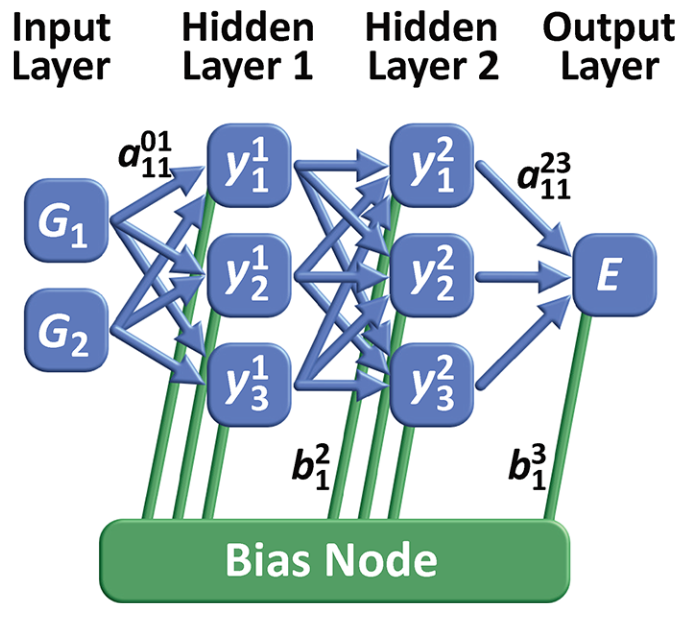

这是发表于 Chemical Reviews 的 Four Generations of High-Dimensional Neural Network Potentials 论文总结。
文章将基于机器学习方法对多原子系统模拟的神经网络势函数作了分类，并对未来做出了展望。
# 原子势
# 尺度与研究方法
不同尺度的问题需要对应不同的研究方法。对于单原子的行为进行预测，采用波函数足以表述一切信息。原子势 (automistic potentials) 则是一种可以用于计算机模拟多原子系统的方法。其通过计算机模拟势函数构建势能面，避免显式求解薛定谔方程，从而达到化学性质的良好模拟。两种基本的原子势构建方法分别依赖数学拟合和物理模拟，其中物理模拟方法依靠物理学原理支持，可扩展性强，但精读较低；数学拟合方法精读较高，但是可解释性差。
# 第一代神经网络势函数
第一代 NNP 仅依赖有限的几个自由度，采用前馈神经网络 (FFNN) 作为核心结构。例如，采用坐标作为输入，通过堆叠数层前馈神经网络，最终输出势能。堆叠层数和每层神经元数目越多，则 FFNN 拟合能力越强，但所堆叠的神经网络并没有实际的物理意义。

第一代 NNP 的限制性正是源于 FFNN 的限制性：
- 堆叠深度造成的参数量大，没有足够的数据进行训练；
- 模型不具有平移旋转排列不变性，意味着输入坐标经过变换可能得到不同的预测
- 系统的原子数必须是固定的，这依赖于固定的网络架构（和训练好的参数），可扩展性差
# 第二代神经网络势函数
对于大规模图上特征的研究，一个重要的想法是降低不相关节点之间的相互作用，从而可以实现图规模的有效扩展。这一想法在图神经网络、图可视化等领域都有广泛的应用。
将 NNP 应用于更加复杂的系统同样依赖于此想法。复杂系统限制的破除包括三个步骤：
- 大部分原子之间的互作可以通过原子于其局部化学环境之间的互作描述
- 创建了一种新的描述符号，其具有平移、旋转和置换不变性
- 使用主动学习在高维配置空间中构建训练集
关于第一步，实际上是将势能表示为一系列原子能之和，即
其中， 是系统中的元素数量， 是各元素对应的原子数量。